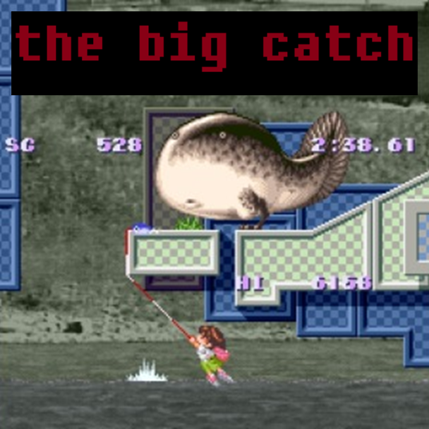

Umihara Kawase
A unique 2D platformer where sushi chef Kawase Umihara uses an elastic fishing line to navigate surreal worlds filled with salt-water and fresh-water creatures. The game is built around realistic physics as you swing between platforms, lower yourself down ledges, and catapult yourself by stretching the line to its breaking point. Inspired by arcade classics like Donkey Kong and Roc'n Rope.
.png)
| Platform | Super Famicom |
|---|---|
| Genre | Physics-Based Platformer |
| Released | |
| Developer | Studio Saizensen |
| Publisher | TNN |
| Available | SFC, NSO (Japan only) |
Where to Play
About This Game
Umihara Kawase was developed by TNN and released for the Super Famicom in 1994, exclusively in Japan. The game stars a young Japanese girl armed with a rubber fishing line that functions as a grappling hook, navigating surreal floating platforms populated by oversized walking fish. Beneath its cute exterior lies one of the most demanding physics-based platformers ever created—the fishing line stretches and bounces with realistic elasticity, and mastering its momentum is essential for reaching each stage's exit door.
The game never received an official Western release during the 16-bit era, but it developed a fervent cult following among import gamers and speedrunners who were captivated by its deep, skill-rewarding mechanics. The fishing line physics were remarkably advanced for 1994, creating emergent movement possibilities that players are still discovering today. Umihara Kawase spawned several sequels across PlayStation, PSP, DS, and modern platforms, but the original Super Famicom version is still considered the purest expression of the concept—a deceptively simple game that reveals extraordinary depth to anyone willing to learn its unique language of swings, launches, and rubber-band trajectories.
Did You Know?
- The physics engine was revolutionary for 1994 — Umihara Kawase featured a fully elastic rubber-band physics simulation on the Super Famicom, years before physics-based gameplay became common. The fishing line stretches, bounces, and recoils realistically based on tension and momentum.
- The protagonist is a travelling sushi chef — Kawase Umihara is a 20-year-old backpacker who carries a fishing lure as her only tool. The surreal enemies — giant walking fish and oversized sea creatures — tie into her culinary background, as if she's wandered into a nightmare about her ingredients.
- The game has 49 fields but most are hidden — While the game appears to have around 10 stages on a linear path, there are actually 49 total fields connected through secret exits. Finding alternate doors in each stage reveals branching paths that dramatically change the route through the game.
- It never left Japan until decades later — The original Super Famicom version was never officially localized. Western players discovered it through imports and emulation, building a cult following. The series finally came West officially in 2014-2015 when Sayonara Umihara Kawase and the original game were released on 3DS, Vita, and Steam.
Critical Reception
Accolades
- Cult Classic Regularly cited among the best undiscovered SFC games — Retro Gamer, 2008
- Top 25 Best Super Famicom Import Games — Hardcore Gaming 101, 2012
- Speedrun Favorite Active competitive community for over 25 years — Speedrun.com
Club Achievements

Beat the Game
GoldSpeedrun Records
Umihara Kawase has a devoted speedrunning community that pushes the elastic fishing line physics to their absolute limits. Runners exploit momentum, precise angles, and frame-perfect launches to catapult through stages at blistering speed.
Soundtrack
Composed by Toshio Kajino
The Umihara Kawase soundtrack is a quirky, upbeat collection of tunes that contrast sharply with the game's punishing difficulty. Cheerful melodies and light jazzy arrangements play while you struggle through some of the most demanding platforming challenges on the Super Famicom.
Notable Tracks
- Title Screen
- Field 0 (Opening Stage)
- Field 7
- Field 14
- Field 25 (Boss Theme)
- Ending Theme
Sources & Attribution
- Game description and historical background adapted from Wikipedia
- Trivia sourced from Hardcore Gaming 101 and community research
- Review scores from Famitsu, Super Famicom Magazine, and Retro Gamer
- Speedrun data from Speedrun.com
- Playtime estimates from HowLongToBeat
- Screenshots and box art via LaunchBox Games Database
- Soundtrack information from KHInsider
- Pricing data from PriceCharting